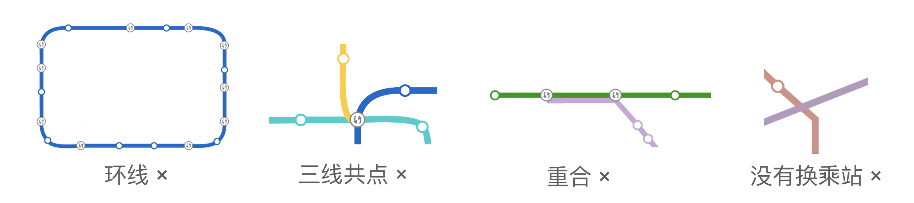

小 Y 是一个爱好旅行的 OIer。一天，她来到了一个新的城市。由于不熟悉那里的交通系统，她选择了坐地铁。
她发现每条地铁线路可以看成平面上的一条曲线，不同线路的交点处一定会设有换乘站 。
通过调查得知，没有线路是环线，也没有线路与自身相交。任意两条不同的线路只会在若干个点上相交，没有重合的部分，且没有三线共点的情况。即，如图所示的情况都是不存在的：
小 Y 坐着地铁 $0$ 号线，路上依次经过了 $n$ 个换乘站。她记下了每个换乘站可以换乘的线路编号，发现每条线路与她所乘坐的线路最多只有 $2$ 个换乘站。现在小 Y 想知道，除掉她经过的换乘站以外，这个城市里最少有几个换乘站。只有你告诉她正确的答案，她才会答应下次带你去玩呢。
本题包含多组数据。
第一行包含一个正整数 $T$ ($T \leq 100$)，表示输入数据的组数。接下来依次给出每组数据。
对于每组数据，第一行包含一个正整数 $n$ ($n \leq 44$)，表示小 Y 经过的换乘站的数目。
第二行包含 $n$ 个用空格隔开的正整数 $a_1, a_2, \cdots, a_n$ ($1 \leq a_i \leq n$，保证每个 $a_i$ 出现不超过两遍)，依次表示每个换乘站的可以换乘的线路编号。
对于每组数据，输出一行一个整数，表示除掉这 $n$ 个换乘站之外，最少有几个换乘站。
花絮：1. 都在地铁上了怎么能不做这道题呢？2. 为什么感觉上面的地铁线路图是从北京的地铁网络上截下来的呢？
不扯了，下面进入正题。
由于每个线路只与主线 ($0$ 号线) 至多交于两点，因此下面分情况讨论一下：
如果一个线路 (在输入中) 只与主线交于一个点，则它对答案是不会产生影响的。因为可以不妨假设这条线路的长度是无穷小的。
因此只需考虑一个线路与主线交于不同的两个点的情形。
对于一种相交方式，它们是本质不同的当且仅当存在两个区域的连通方式不同。因此，本质不同的连接方式只有如下 $4$ 种：

它们分别将原有的 $6$ 块区域分成了 $\left( \left\{ 2 \right\}, \left\{ 1, 3, 4, 5, 6 \right\} \right), \left( \left\{ 5 \right\}, \left\{ 1, 2, 3, 4, 6 \right\} \right), \left( \left\{ 1, 2, 4 \right\}, \left\{ 3, 5, 6 \right\} \right), \left( \left\{ 1, 4, 5 \right\}, \left\{ 2, 3, 6 \right\} \right)$ 这几种形式。
注意到与主线交于不同两点的线路至多 $\dfrac n2$ 条，因此如果我们暴力枚举每条线路的连接方式，则总复杂度是 $O \left( 4^{n/2} \right) = O \left( 2^n \right)$ 的，无法通过。
不过我们可以改变枚举的顺序。如果我们按照每一个线路两个端点中的较左者进行排序，则每一次枚举时，只需考虑剩下线路在 $\left\{ 2, 3, 5, 6 \right\}$ 中的情况了。
我们将上面 $4$ 种划分方案中的 $\left\{ 1, 4 \right\}$ 去掉，可以惊喜地发现本质不同的方案只有 $2$ 种了！(分别是 $\left( \left\{ 2 \right\}, \left\{ 3, 5, 6 \right\} \right)$ 和 $\left( \left\{ 5 \right\}, \left\{ 2, 3, 6 \right\} \right)$)
于是只需枚举是哪两种之一即可。在组内可以直接贪心取较小的方案。
方案的记录可以用树状数组一个 $64$ 位整数记录，相关操作可以使用诸如 popcount 等此类函数。
时间复杂度 (单组) $O \left( 2^{n/2} \right)$ (popcount 等函数开销忽略不计)。
#include <bits/stdc++.h>
#define popc __builtin_popcountll
typedef unsigned long long u64;
const int N = 54;
int n, cnt, ans;
int a[N], pos[N];
u64 cov[N];
inline int min(const int x, const int y) {return x < y ? x : y;}
inline void down(int &x, const int y) {x > y ? x = y : 0;}
void dfs(int d, int cur, u64 U, u64 D) {
if (d == cnt || cur >= ans) return down(ans, cur);
int um = popc(U & cov[d]), dm = popc(D & cov[d]), ri = popc(U & -1ull << pos[d]) + popc(D & -1ull << pos[d]);
dfs(d + 1, cur + min(um, dm + ri), U | 1ull << pos[d], D);
dfs(d + 1, cur + min(um + ri, dm), U, D | 1ull << pos[d]);
}
void work() {
int i, j; cnt = 0;
scanf("%d", &n);
for (i = 0; i < n; ++i) scanf("%d", a + i);
for (i = 0; i < n; ++i)
if ((j = std::find(a + (i + 1), a + n, a[i]) - a) != n)
pos[cnt] = j, cov[cnt++] = ~(-1ull << (j - i + 1)) << i;
ans = n, dfs(0, 0, 0, 0);
printf("%d\n", ans);
}
int main() {
int T;
for (scanf("%d", &T); T; --T) work();
return 0;
}
坑1：位运算较多时注意 long long 转换和运算符优先级。
坑2：搜索时注意剪枝 (比如答案已经超过 $\min$ 则 return)，否则可能会有卡常风险。